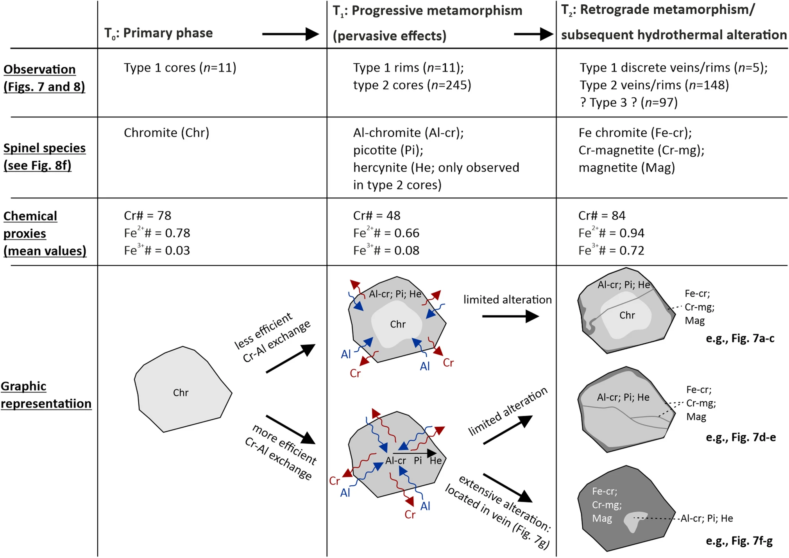

Spinel-group minerals as a record of magmatic and metamorphic processes: evidence from the highly altered Morro do Onça ultramafic suite, São Francisco Craton (Brazil)

Resumo em Português
A Suíte Morro do Onça é um conjunto de rochas ultramáficas no sul do Cráton São Francisco, Brasil. Devido à completa alteração dos minerais silicáticos primários, a Suíte Morro do Onça tem sido objeto de interpretações divergentes, incluindo sua classificação como parte de um ofiolito/cunha acrecionária Paleoproterozoica retroeclogítica ou como fluxo(s) de komatiito Arqueano. Neste trabalho, utilizamos a química de minerais do grupo do espinélio — em conjunto com mapeamento de campo, petrografia, química de minerais silicáticos e geoquímica de rocha total — para decifrar a evolução magmática e metamórfica da Suíte Morro do Onça.Uma origem komatiítica é suportada pela identificação de camadas com textura spinifex, bem como pelas composições primárias de minerais do grupo do espinélio (Cr-número médio = 79; TiO₂ médio = 0,3% em peso) e pelos valores de elementos de terras raras de rocha total normalizados ao condrito ([Sm–Lu]N = 1,2–5,1). O metamorfismo atingiu fácies anfibolito médio/superior e foi provavelmente responsável pela mobilidade do Al em escala mineral e de rocha total, demonstrando que o proxy Al/Ti de rocha total comumente utilizado para classificar komatiitos é suscetível à alteração. Assim, os komatiitos de Morro do Onça registram valores variáveis de Al/Ti de rocha total (17–47) que se sobrepõem tanto aos komatiitos do tipo Munro (Al/Ti = 22) quanto aos do tipo Weltevreden (Al/Ti = 30). Com base nas razões de elementos traço imóveis ([Gd/Lu]N = 0,6–2,0) e nas composições primárias de minerais do grupo do espinélio, os komatiitos de Morro do Onça são classificados como do tipo Weltevreden. Komatiitos Mesoarqueanos relacionados ao magmatismo de pluma mantélica são agora reconhecidos em todo o Cráton São Francisco meridional, potencialmente sugerindo que sua litosfera precursora era contínua durante essa Era.